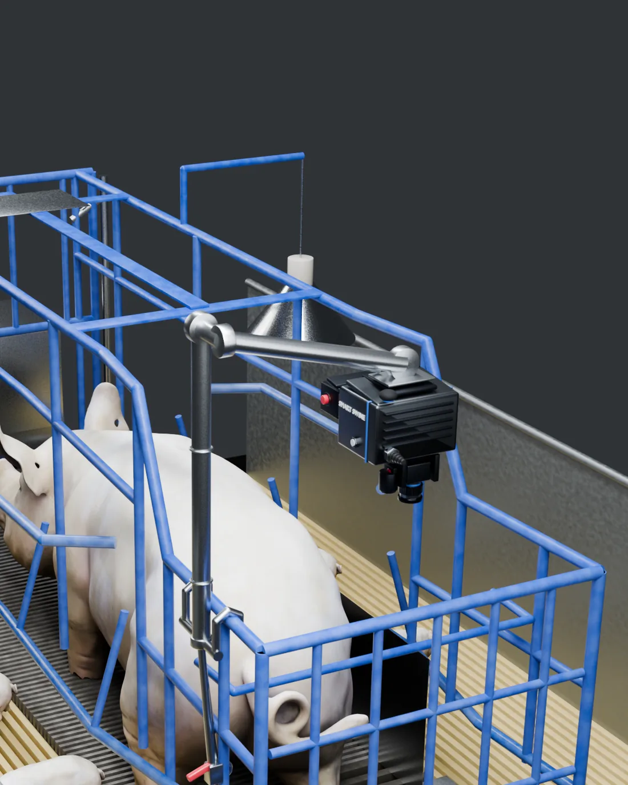
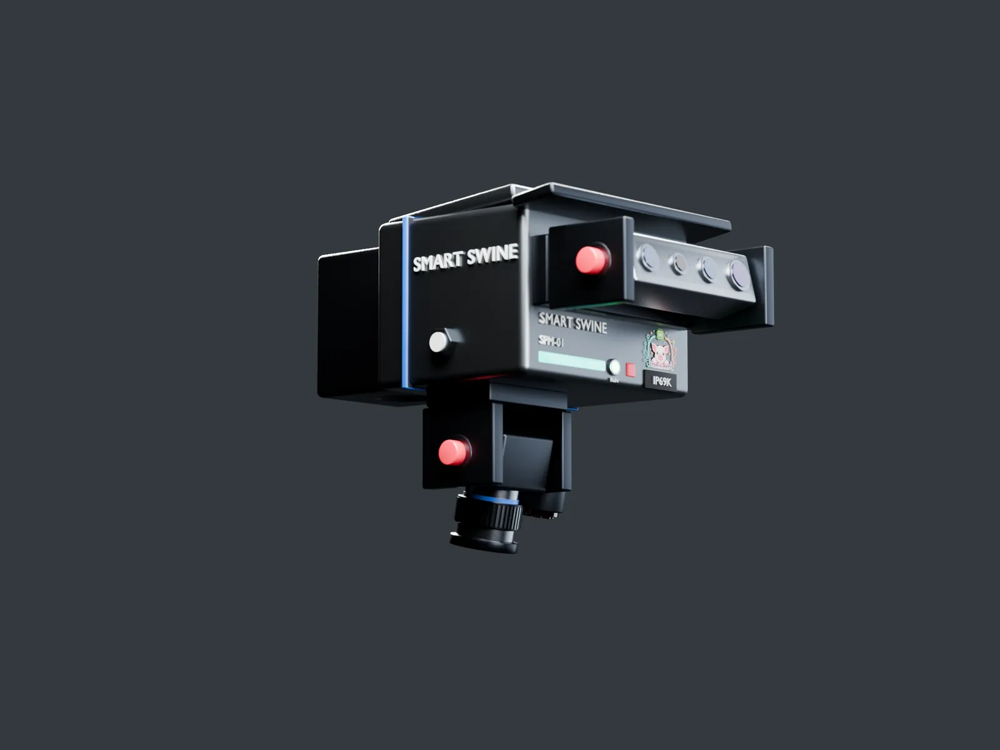
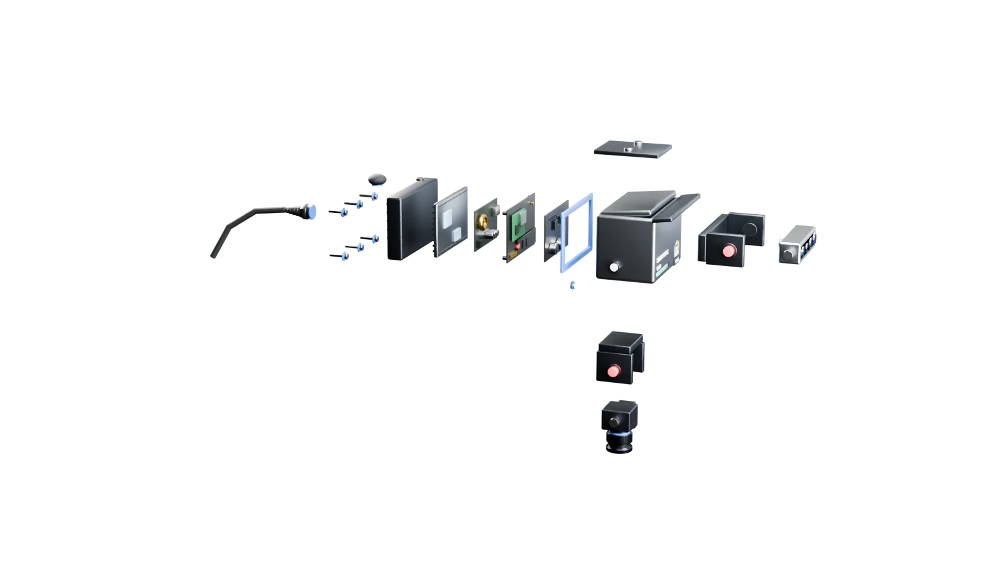
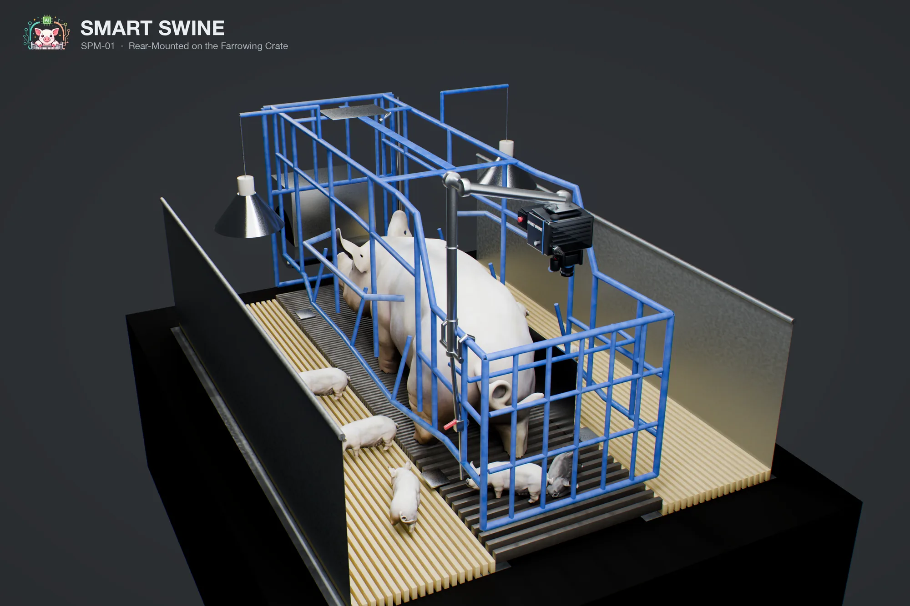
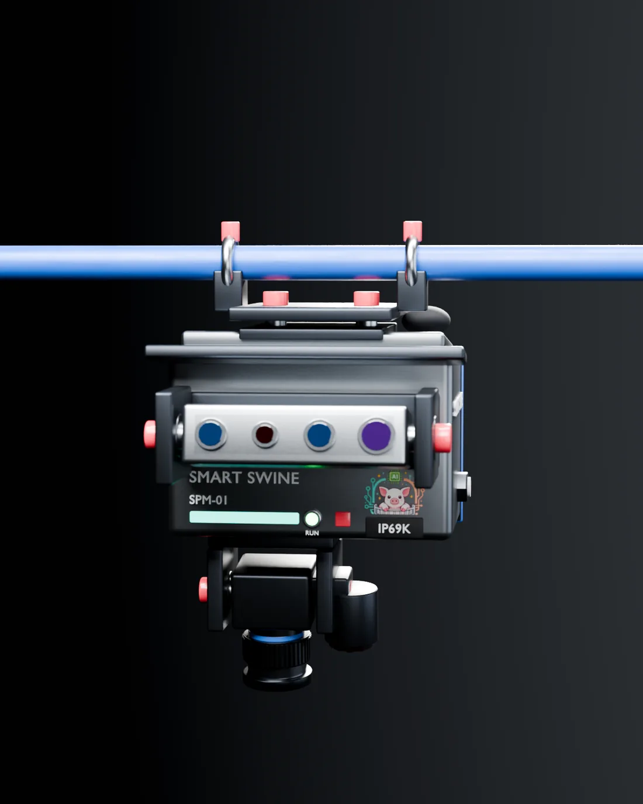
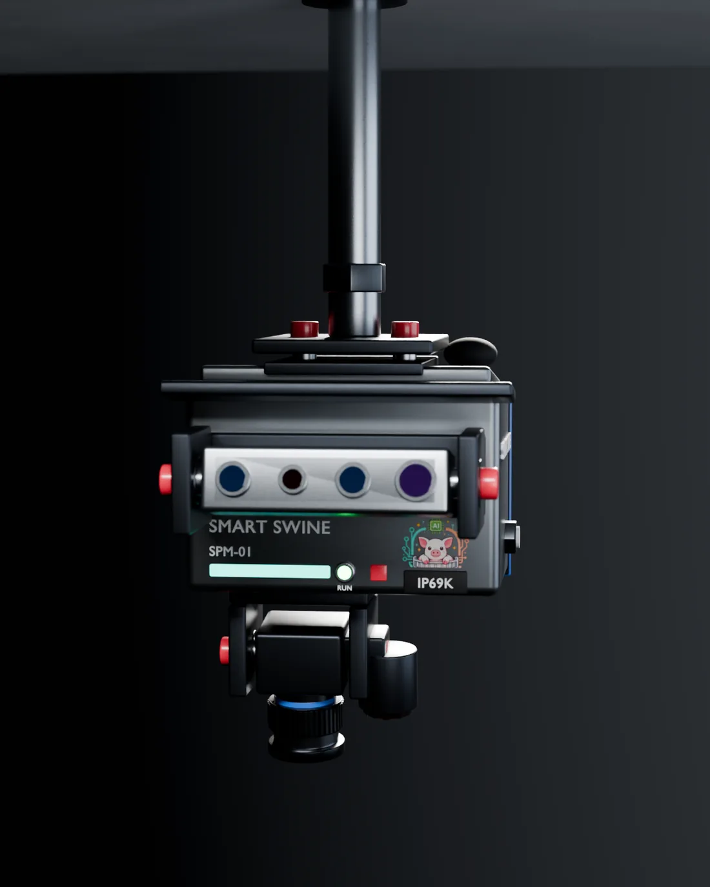
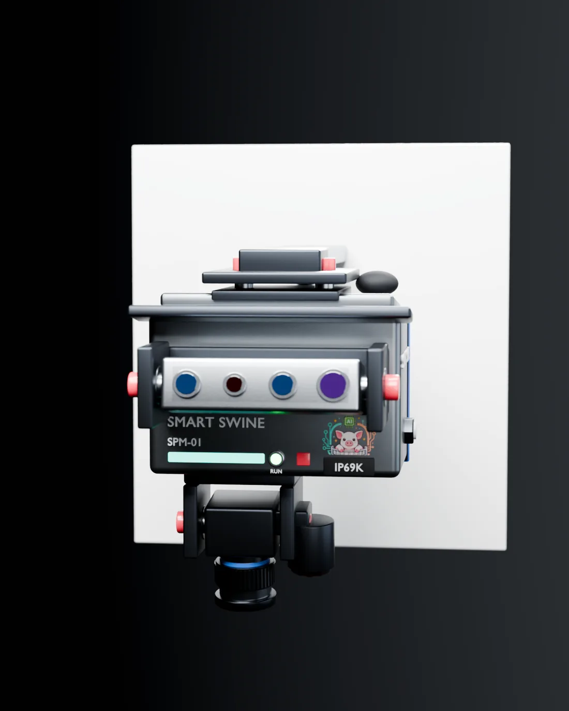
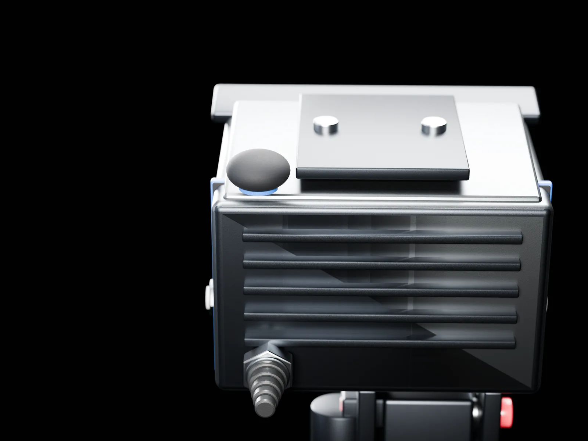

Crate arm
The standard install. J-hooks hang on the crate's rear rail and a cam lever locks the riser.
Detect
Smart Piglet Monitor
Dual-axis vision for the farrowing crate. One sealed unit watches the sow and her newborn piglets at once.
Prototype validated on farm
Gasket, gland, vents, rain lip: engineered for the pressure washer, then hung on the crate without a tool.

The sensor
Farrowing loss has two causes and they need two different kinds of sight. SPM-01 carries both.
Forward
Looks along the sow's body. Posture, respiration rate and the sternal-to-lateral roll that causes most crushing deaths. Depth reading her back came first out of 18 sensor and tracker combinations we scored against a manual breath count, at 2.43 breaths per minute of mean absolute error, which is why this head is depth rather than a second color camera. The scores are in the case study.
Downward
Looks straight down at the perineal region and the landing zone. Newborn detection and stillborn discrimination need color and membrane texture, which depth cannot give.

Inside the seal
Every penetration (cable, antenna, screws, vents) gets the same treatment: engineered, then sealed. Scroll to take it apart.

Internal layout is a design proposal. IP69K is a design target.
Washdown survival: the #2 concern in our producer survey (71%)
Between batches a farrowing room is emptied and hit with a high-pressure, high-temperature wash, the treatment that kills barn electronics. SPM-01 treats it as a design input: a compressed perimeter gasket, six captive screws on bonded seal washers, membrane pressure-equalizing vents, a sealed cable gland behind five stages of strain relief, a rain lip over the optics and a self-draining top slope. Or skip the shower entirely: the quick-mount plate takes the unit off in seconds, sealed while it waits out the wash.
Installation
Two rubber-lined hooks hang on the crate's own rear rail and one cam lever locks the riser: on or off in seconds, no tools. Sensor and crate share one rigid body, so nothing drifts out of calibration.

Every SPM-01 carries the same quick-mount plate: two bosses, two thumb knobs, no tools. The plate stays the same while the arm changes, so one unit moves between rooms and layouts.

The standard install. J-hooks hang on the crate's rear rail and a cam lever locks the riser.

No arm at all. Two thumb-screw ring clamps grab a crate rail directly.

A ceiling tube with a height collar, for pens without a usable rail.

A panel plate and boom arm, for solid-wall farrowing rooms.
Every mount, same freedom: each optical head rides its own yoke with a thumb-screw pitch lock. Aim the depth bar along the sow and the RGB head at the landing zone, whatever the room's geometry. The mount sets the height. The heads set the view. No tools on either.

Connectivity
A washdown-rated metal shell is also a Faraday cage. So every signal path got the same treatment as every water path: engineered, then sealed.
Through the wall
The radio's antenna lives outside the shell: steel base, compression O-ring, TPE dome, sealed like every other penetration.
Alerts that travel
Crushing-risk postures and stalled farrowings are inferred on the unit in ~0.2 s per frame and relayed through the farm network to the herd team's phones, wherever the team happens to be.
Local-first
Every recording lands on the M.2 drive first. A network outage costs nothing, and footage stays on the farm until you decide otherwise.
Evidence
Vision models trained on 500+ hours of on-farm depth and RGB farrowing video. Hardware validated in a 10-sow on-farm trial under IACUC oversight.
Every number here came out of that trial, and the footage the models produced is unedited in the case study.
Approximately $1M in non-dilutive NSF and USDA-NIFA support (2026–2029), with the university and industry partners listed on the home page. Finalist, 2026 AI Venture Velocity Challenge: 531 teams across 160 universities, 27 semifinalists, 12 finalists.
| Capability | Result | Scope of the claim |
|---|---|---|
| Sow posture | 99.15% | Classification, tested on an unseen sow |
| Breathing signal | 98.4% | Classification, on validation data |
| Stillborn detection | 96% | Precision |
| Newborn detection | 86% | Precision |
| Inference | ~0.2 s | Per frame, on the unit |
Customer discovery · June 2026
Concept test run online through U.S. pork-industry associations plus in-person field surveys. n ≈ 16–19 responses per question.
Asked what worries them most about crate electronics, producers ranked unclear cost and payback first (76%), washdown survival second (71%) and hardware reliability third (41%), all far ahead of false-alarm worries about the AI (29%). The sealing, the quick-release wash cycle and the mounting options above are the direct answers.
Every respondent who named a price called $1,499 or less a clear bargain. Resistance climbs past about $2,000. 39% rated the system high value on first read and half sat at "some value": an ROI story to win, not a concept to explain.
Small mixed sample: a concept test, not purchases. Warm-lead contact details are held confidentially.
Business model
Try one free this season first. After that farms budget differently, so SPM-01 sells both ways. Either way the hardware is the same sealed unit, and either way it carries a lifetime warranty.
Buy the units
One unit per farrowing crate, yours outright. A unit is not tied to one crate: demount it at weaning, wash the room, hang it on the next batch. The quick-mount plate moves it between rooms and layouts as your barn changes.
Rent by the batch
The monitor earns its keep in a 10-day window around each farrowing: mount before the due date, demount at weaning. Rent units for the cycles you actually run and skip the capital line entirely. Try it on one room before you commit to the whole barn.
Lifetime warranty
We designed this unit to take a pressure washer to the face, batch after batch, and we stand behind that. If an SPM-01 fails in normal farm service, we repair or replace it. That is what confidence in our own engineering looks like.
The rest of the system
Detection without an actuator leaves the last meter of the crushing problem unsolved. SPC-01 closes it: a motorized curtain on the crate that shuts the danger zone SPM-01 has named, seconds before the sow rolls, and lifts the moment she is safe.

Act
Two independent curtain units per crate, commanded by SPM-01 over a sealed wireless link.
Decide and manage
Every SPM-01 streams into the Smart Swine app: alerts, live view and the morning brief, on the herd team's phones.
The trial is free for the 2026 farrowing season. One room, one batch: see the morning brief for yourself, then hand the prototype back. We build the units by hand, so slots are limited and go first come.